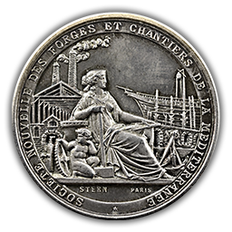
地中海冶金造船厂
company_fcm
彩蛋公司固定建筑：造船厂、汽车厂
可选扩展：炼钢厂
可达州：普罗旺斯
潜力条件：{ has_interest_marker_in_region = sr:region_southern_europe }
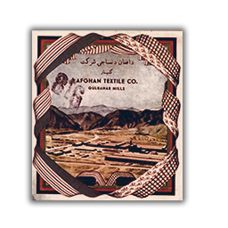
阿富汗纳萨吉公司
company_da_afghan_nassaji_sherkat
彩蛋公司固定建筑：纺织厂
可选扩展：棉花种植园
名贵商品：名牌服装
可达州：南突厥斯坦
潜力条件：{ has_dlc_feature = ep1_content has_interest_marker_in_region = sr:region_greater_persia }
阿吉拉
company_el_aguila
彩蛋公司固定建筑：油井
可选扩展：发电厂
潜力条件：{ has_interest_marker_in_region = sr:region_central_america }
阿克斯机械工作室
company_aker_mek
彩蛋公司固定建筑：造船厂、动力机械厂
可选扩展：工艺装备工坊
可达州：挪威东部
潜力条件：{ has_interest_marker_in_region = sr:region_northern_europe }
阿拉蒂尼面粉厂
company_allatini_mills
彩蛋公司固定建筑：小麦农场、黑麦农场
可选扩展：食品厂
名贵商品：优质谷物
可达州：马其顿
潜力条件：{ has_interest_marker_in_region = sr:region_balkans }
阿马德奥·罗西公司
company_rossi
彩蛋公司固定建筑：武器厂、弹药厂
可选扩展：炸药厂
名贵商品：强力轻武器
可达州：南里奥格兰德
潜力条件：{ has_dlc_feature = rp1_content has_interest_marker_in_region = sr:region_brazil }
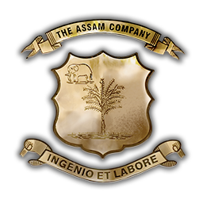
阿萨姆公司
company_assam_company
彩蛋公司固定建筑：茶叶种植园
可选扩展：伐木营地
名贵商品：阿萨姆茶
可达州：阿萨姆
潜力条件：{ has_interest_marker_in_region = sr:region_north_india }
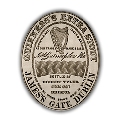
阿瑟·吉尼斯公司
company_guinness
彩蛋公司固定建筑：食品厂
可选扩展：小麦农场、黑麦农场
名贵商品：精品加工食品
可达州：伦斯特
潜力条件：{ has_interest_marker_in_region = sr:region_western_europe }
埃及国家铁路
company_egyptian_rail
彩蛋公司固定建筑：铁路
可选扩展：动力机械厂
适用文化：misri
潜力条件：{ country_has_primary_culture = cu:misri }
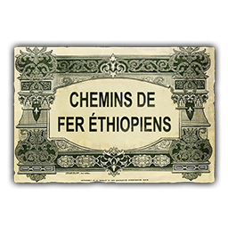
埃塞俄比亚帝国铁路公司
company_imperial_ethiopian_railways
彩蛋公司固定建筑：铁路
可选扩展：动力机械厂
潜力条件：{ has_interest_marker_in_region = sr:region_east_africa }
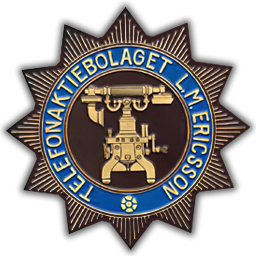
爱立信
company_ericsson
彩蛋公司固定建筑：电子厂
可选扩展：铁矿、铜矿
名贵商品：爱立信仪器
可达州：斯韦阿兰
潜力条件：{ has_interest_marker_in_region = sr:region_northern_europe }
固定建筑：火炮铸造厂、炼钢厂、工艺装备工坊
可选扩展：发电厂
名贵商品：精炼钢
可达州：皮埃蒙特
潜力条件：{ has_interest_marker_in_region = sr:region_southern_europe }
固定建筑：硫矿、铁路、港口
可选扩展：工艺装备工坊、煤矿、纺织厂
名贵商品：高速商船
可达州：关东
关联国家：日本
潜力条件：{ has_dlc_feature = ep2_content c:JAP ?= this }
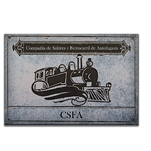
安托法加斯塔硝石与铁路公司
company_csfa
彩蛋公司固定建筑：硫矿、铁路
可选扩展：铁矿
可达州：安托法加斯塔
潜力条件：{ has_interest_marker_in_region = sr:region_andes }
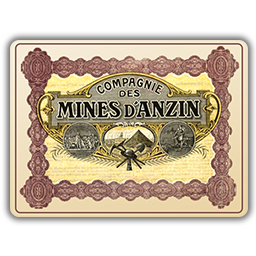
昂赞矿业公司
company_mines_anzin
彩蛋公司固定建筑：煤矿
可选扩展：铁矿
可达州：法属低地
潜力条件：{ has_interest_marker_in_region = sr:region_western_europe }
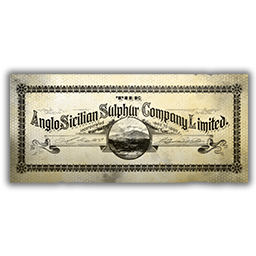
盎格鲁-西西里硫磺公司
company_anglo_sicilian_sulphur_company
彩蛋公司固定建筑：硫矿
可选扩展：港口
名贵商品：西西里硫磺
可达州：西西里
关联国家：大不列颠
潜力条件：{ has_dlc_feature = mp1_content has_interest_marker_in_region = sr:region_southern_europe }
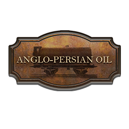
盎格鲁‑波斯石油公司
company_anglo_persian_oil
彩蛋公司固定建筑：油井
可选扩展：发电厂
可达州：阿拉伯斯坦
适用文化：british、persian
潜力条件：{ has_dlc_feature = ep1_content has_interest_marker_in_region = sr:region_greater_persia OR = { country_has_primary_culture = cu:british country_has_primary_culture = cu:persian } }
奥地利阿尔卑斯矿冶公司
company_oesterreichisch_alpine_montangesellschaft
彩蛋公司固定建筑：炼钢厂、铁矿
可选扩展：铁路
可达州：施蒂里亚
潜力条件：{ has_interest_marker_in_region = sr:region_central_europe }
固定建筑：武器厂、火炮铸造厂
可选扩展：炼钢厂、弹药厂、电子厂
名贵商品：强力轻武器
可达州：奥地利
潜力条件：{ has_interest_marker_in_region = sr:region_central_europe }
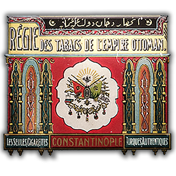
奥斯曼烟草公司
company_ottoman_tobacco_regie
彩蛋公司固定建筑：烟草种植园
可选扩展：鸦片种植园
名贵商品：土耳其烟草
适用文化：turkish
潜力条件：{ country_has_primary_culture = cu:turkish }
巴拿马运河公司
company_panama_company
彩蛋公司固定建筑：贸易中心、港口
可选扩展：造船厂
名贵商品：高速商船
可达州：巴拿马
潜力条件：{ has_interest_marker_in_region = sr:region_central_america }
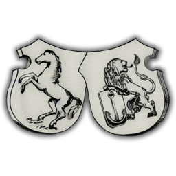
巴斯夫
company_basf
彩蛋公司固定建筑：化学合成厂、肥料厂
可选扩展：染料作物种植园、硫矿
名贵商品：德意志苯胺
可达州：巴登
潜力条件：{ has_interest_marker_in_region = sr:region_central_europe }
白星航运公司
company_white_star_line
彩蛋公司固定建筑：港口
可选扩展：造船厂
名贵商品：白星班轮
可达州：兰开夏
潜力条件：{ has_dlc_feature = ep2_content has_interest_marker_in_region = sr:region_western_europe }
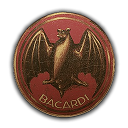
百加得公司
company_bacardi
彩蛋公司固定建筑：食品厂、玻璃厂
可选扩展：葡萄园
名贵商品：百加得朗姆酒
可达州：东古巴
潜力条件：{ has_interest_marker_in_region = sr:region_central_america has_dlc_feature = ip4_content }
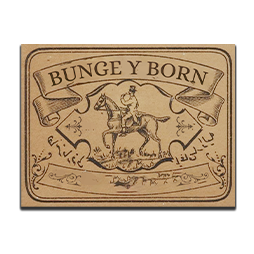
邦吉与博恩公司
company_bunge_born
彩蛋公司固定建筑：小麦农场、玉米农场、食品厂
可选扩展：肥料厂
名贵商品：精品加工食品
潜力条件：{ has_interest_marker_in_region = sr:region_la_plata }
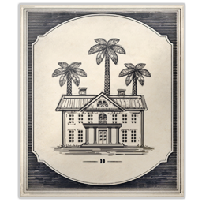
北部省联合公司
company_sherkat_shemali
彩蛋公司固定建筑：棉花种植园
可选扩展：纺织厂
可达州：南突厥斯坦
潜力条件：{ has_interest_marker_in_region = sr:region_greater_persia }
比斯开高炉
company_altos_hornos_de_vizcaya
彩蛋公司固定建筑：炼钢厂、铁矿
可选扩展：煤矿
名贵商品：精炼钢
可达州：巴斯克
潜力条件：{ has_interest_marker_in_region = sr:region_southern_europe }
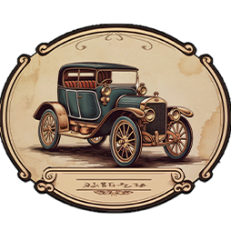
标准电机
company_basic_motors
彩蛋公司固定建筑：动力机械厂、汽车厂
可选扩展：炼钢厂
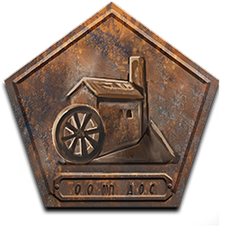
标准矿物
company_basic_mineral_mining
彩蛋公司固定建筑：硫矿、煤矿
可选扩展：铁矿
标准石油
company_standard_oil
彩蛋公司固定建筑：油井、铁路
可选扩展：港口
潜力条件：{ has_interest_marker_in_region = sr:region_atlantic_coast }
标准殖民地产品
company_basic_colonial_plantations_2
彩蛋公司固定建筑：咖啡种植园、糖料作物种植园、烟草种植园
可选扩展：茶叶种植园
名贵商品：特选咖啡
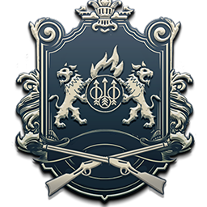
兵器集团
company_basic_weapons
彩蛋公司固定建筑：武器厂、火炮铸造厂
可选扩展：汽车厂、炼钢厂
名贵商品：强力轻武器
波斯帝国烟草公司
company_imperial_tobacco
彩蛋公司固定建筑：烟草种植园
可选扩展：鸦片种植园
潜力条件：{ has_interest_marker_in_region = sr:region_greater_persia }
波斯棉花公司
company_perskhlopok
彩蛋公司固定建筑：棉花种植园
可选扩展：纺织厂
适用文化：russian
潜力条件：{ has_dlc_feature = ep1_content has_interest_marker_in_region = sr:region_greater_persia }
波斯丝绸公司
company_persshelk
彩蛋公司固定建筑：丝绸种植园
可选扩展：纺织厂
适用文化：russian
潜力条件：{ has_dlc_feature = ep1_content has_interest_marker_in_region = sr:region_greater_persia }
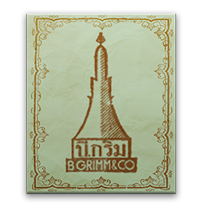
伯恩哈德·格林
company_b_grimm
彩蛋公司固定建筑：水稻农场
可选扩展：肥料厂
名贵商品：优质谷物
可达州：曼谷
潜力条件：{ has_interest_marker_in_region = sr:region_indochina }
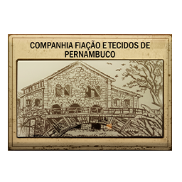
伯南布哥纺织公司
company_pernambuco_textiles
彩蛋公司固定建筑：纺织厂
可选扩展：棉花种植园、畜牧场
名贵商品：名牌服装
可达州：伯南布哥
潜力条件：{ has_dlc_feature = rp1_content has_interest_marker_in_region = sr:region_brazil }
博尔科-沃恩公司
company_bolckow_vaughan
彩蛋公司固定建筑：煤矿、铁矿、炼钢厂
可选扩展：铅矿
名贵商品：谢菲尔德钢
可达州：约克郡
潜力条件：{ has_interest_marker_in_region = sr:region_western_europe }
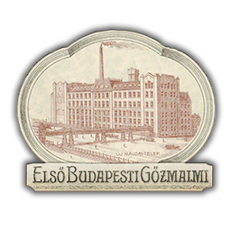
布达佩斯第一蒸汽磨坊股份公司
company_elso_budapesti_gozmalom
彩蛋公司固定建筑：小麦农场、食品厂
可选扩展：伐木营地
名贵商品：潘诺尼亚上等面粉
可达州：匈牙利大平原
潜力条件：{ has_interest_marker_in_region = sr:region_balkans has_dlc_feature = ip3_content }
布料生产者联合会
company_basic_fabrics
彩蛋公司固定建筑：棉花种植园、畜牧场
可选扩展：纺织厂
名贵商品：优质肉类
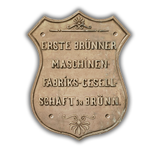
布吕恩第一机械制造公司
company_erste_brunner
彩蛋公司固定建筑：动力机械厂、工艺装备工坊
可选扩展：发电厂
名贵商品：布吕恩型引擎
可达州：摩拉维亚
潜力条件：{ has_interest_marker_in_region = sr:region_central_europe has_dlc_feature = ip3_content }
布罗肯希尔矿业公司
company_broken_hill_proprietary_company
彩蛋公司固定建筑：金矿、铜矿
可选扩展：炼钢厂、汽车厂、铁矿
可达州：新南威尔士
潜力条件：{ has_dlc_feature = ep2_content has_interest_marker_in_region = sr:region_oceania }
大东方种植有限公司
company_basic_colonial_plantations_1
彩蛋公司固定建筑：鸦片种植园、茶叶种植园
可选扩展：烟草种植园
名贵商品：高纯鸦片
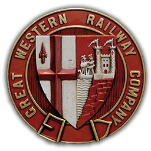
大西部铁路
company_gwr
彩蛋公司固定建筑：铁路
可选扩展：煤矿
潜力条件：{ has_interest_marker_in_region = sr:region_western_europe }
大型制糖厂
company_gran_azucarera
彩蛋公司固定建筑：糖料作物种植园、伐木营地、畜牧场
可选扩展：铁路
名贵商品：哈瓦那糖
可达州：西古巴、中古巴、东古巴
潜力条件：{ has_interest_marker_in_region = sr:region_central_america has_dlc_feature = ip4_content }
大印度半岛铁路
company_great_indian_railway
彩蛋公司固定建筑：铁路
可选扩展：铁矿
潜力条件：{ OR = { has_interest_marker_in_region = sr:region_south_india has_interest_marker_in_region = sr:region_north_india } }
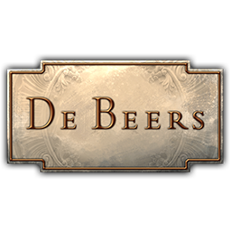
戴比尔斯综合矿业有限公司
company_de_beers
彩蛋公司固定建筑：金矿
可选扩展：铁矿
潜力条件：{ has_dlc_feature = mp1_content has_interest_marker_in_region = sr:region_southern_africa }
帝国兵工厂
company_imperial_arsenal
彩蛋公司固定建筑：造船厂、火炮铸造厂
可选扩展：炼钢厂、炸药厂
可达州：东色雷斯
潜力条件：{ has_interest_marker_in_region = sr:region_balkans }
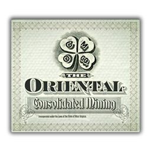
东方联合矿业公司
company_oriental_consolidated_mining
彩蛋公司固定建筑：金矿、伐木营地
可选扩展：铁矿、铅矿
可达州：两西
潜力条件：{ has_dlc_feature = ep2_content has_interest_marker_in_region = sr:region_northeast_asia }
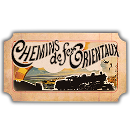
东方铁路
company_orient_express
彩蛋公司固定建筑：铁路
可选扩展：动力机械厂
潜力条件：{ OR = { has_interest_marker_in_region = sr:region_near_east has_interest_marker_in_region = sr:region_balkans } }
东京电灯株式会社
company_tokyo_electric_light_company
彩蛋公司固定建筑：发电厂
可选扩展：铁路
可达州：关东
潜力条件：{ has_dlc_feature = ep2_content has_interest_marker_in_region = sr:region_northeast_asia }
东洋拓殖株式会社
company_oriental_development_company
彩蛋公司固定建筑：水稻农场、杂谷农场、小麦农场
可选扩展：玉米农场、食品厂
名贵商品：优质谷物
适用文化：korean
潜力条件：{ has_interest_marker_in_region = sr:region_northeast_asia }
东印度公司
company_east_india_company
彩蛋公司固定建筑：茶叶种植园、烟草种植园、鸦片种植园
可选扩展：丝绸种植园、糖料作物种植园
名贵商品：孟加拉鸦片
关联国家：大不列颠
潜力条件：{ c:GBR ?= this }
杜罗公司
company_duro_y_compania
彩蛋公司固定建筑：煤矿、炼钢厂、铁矿
可选扩展：伐木营地
名贵商品：精炼钢
可达州：阿斯图里亚斯
潜力条件：{ has_interest_marker_in_region = sr:region_southern_europe }
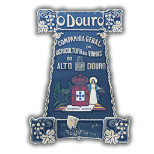
杜罗河上游葡萄通用公司
company_douro_wine_company
彩蛋公司固定建筑：葡萄园、食品厂
可选扩展：玻璃厂
名贵商品：波特酒
可达州：杜罗‑米尼奥河间
潜力条件：{ has_interest_marker_in_region = sr:region_southern_europe has_dlc_feature = ip4_content }
多布鲁什造纸厂
company_dobrush_paper
彩蛋公司固定建筑：造纸厂
可选扩展：伐木营地
名贵商品：工艺纸品
可达州：莫吉廖夫
潜力条件：{ has_interest_marker_in_region = sr:region_eastern_europe }
多尔菲斯-米格公司
company_dmc
彩蛋公司固定建筑：纺织厂、煤矿
可选扩展：染料作物种植园、棉花种植园
名贵商品：名牌服装
可达州：勃艮第
潜力条件：{ has_interest_marker_in_region = sr:region_western_europe }
俄美公司
company_russian_american_company
彩蛋公司固定建筑：伐木营地、捕鲸站、港口
可选扩展：煤矿、渔业码头
名贵商品：优质肉类
潜力条件：{ has_interest_marker_in_region = sr:region_pacific_coast any_primary_culture = { has_discrimination_trait = heritage_east_slavic } }
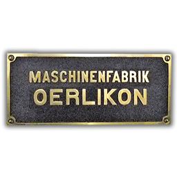
厄利孔机械制造厂
company_maschinenfabrik_oerlikon
彩蛋公司固定建筑：动力机械厂、工艺装备工坊
可选扩展：武器厂、火炮铸造厂、汽车厂
名贵商品：厄利孔引擎
可达州：瑞士东部
潜力条件：{ has_dlc_feature = ep2_content has_interest_marker_in_region = sr:region_central_europe }
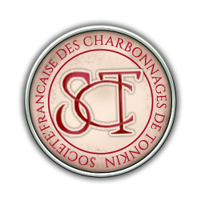
法国东京煤矿公司
company_societe_francaise_charbonnages_du_tonkin
彩蛋公司固定建筑：煤矿、伐木营地
可选扩展：港口、铁路、发电厂
可达州：东京
潜力条件：{ has_interest_marker_in_region = sr:region_indochina }
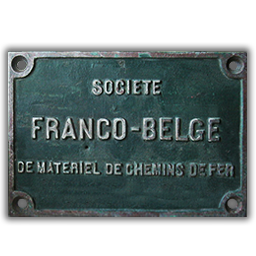
法兰西-比利时公司
company_franco_belge
彩蛋公司固定建筑：动力机械厂、铁路
可选扩展：炼钢厂
可达州：瓦隆尼亚、佛兰德
潜力条件：{ has_interest_marker_in_region = sr:region_western_europe }
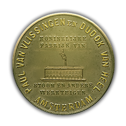
范·弗利辛根和杜多克·范·希尔
company_van_vlissingen_en_dudok_van_heel
彩蛋公司固定建筑：动力机械厂、工艺装备工坊、造船厂
可选扩展：炼钢厂、铁矿、汽车厂
可达州：荷兰
潜力条件：{ has_dlc_feature = ep2_content has_interest_marker_in_region = sr:region_western_europe }
固定建筑：电子厂
可选扩展：发电厂、动力机械厂
名贵商品：小教堂收音机
可达州：荷兰、海尔雷
潜力条件：{ has_interest_marker_in_region = sr:region_western_europe }
菲斯卡斯股份有限公司
company_fiskars
彩蛋公司固定建筑：工艺装备工坊、动力机械厂、铁矿
可选扩展：炼钢厂、畜牧场
名贵商品：菲斯卡工具
可达州：新地
潜力条件：{ has_dlc_feature = ip5_content has_interest_marker_in_region = sr:region_eastern_europe }
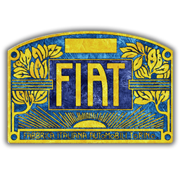
菲亚特
company_fiat
彩蛋公司固定建筑：动力机械厂、汽车厂
可选扩展：炼钢厂
名贵商品：都灵汽车
可达州：皮埃蒙特
潜力条件：{ has_interest_marker_in_region = sr:region_southern_europe }
费兰蒂公司
company_ferranti_ltd
彩蛋公司固定建筑：发电厂、电子厂
可选扩展：工艺装备工坊、动力机械厂
名贵商品：费兰蒂电子设备
可达州：兰开夏
潜力条件：{ has_dlc_feature = ep2_content has_interest_marker_in_region = sr:region_western_europe }
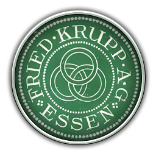
弗里德里希·克虏伯
company_krupp
彩蛋公司固定建筑：武器厂、火炮铸造厂、炼钢厂
可选扩展：铁矿
名贵商品：克虏伯炮
可达州：鲁尔
潜力条件：{ has_interest_marker_in_region = sr:region_central_europe }
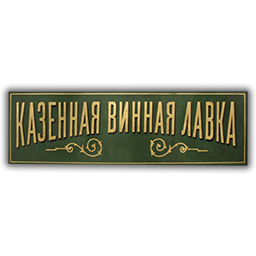
伏特加专营
company_vodka_monopoly
彩蛋公司固定建筑：食品厂、葡萄园
可选扩展：小麦农场、黑麦农场
名贵商品：斯米诺伏特加
适用文化：russian
潜力条件：{ country_has_primary_culture = cu:russian }
福特汽车公司
company_ford_motor
彩蛋公司固定建筑：动力机械厂、汽车厂
可选扩展：炼钢厂、橡胶种植园
名贵商品：福特汽车
可达州：密歇根
潜力条件：{ has_interest_marker_in_region = sr:region_atlantic_coast }
福州造船厂
company_foochow_arsenal
彩蛋公司固定建筑：造船厂、火炮铸造厂
可选扩展：炼钢厂、工艺装备工坊
可达州：福建
潜力条件：{ has_interest_marker_in_region = sr:region_south_china }
阜姆技术厂
company_stabilimento_tecnico_di_fiume
彩蛋公司固定建筑：造船厂、炸药厂
可选扩展：炼钢厂
可达州：克罗地亚、达尔马提亚
潜力条件：{ has_interest_marker_in_region = sr:region_balkans has_dlc_feature = ip3_content }
固定建筑：橡胶种植园、伐木营地、铁矿
可选扩展：铁路、畜牧场
适用文化：wallonian
潜力条件：{ country_has_primary_culture = cu:wallonian }
钢铁兄弟有限公司
company_steel_brothers
彩蛋公司固定建筑：油井、水稻农场
可选扩展：伐木营地
名贵商品：优质谷物
潜力条件：{ has_interest_marker_in_region = sr:region_indochina has_dlc_feature = ip2_content }
哥德维肯造船厂
company_gotaverken
彩蛋公司固定建筑：造船厂、动力机械厂、工艺装备工坊
可选扩展：伐木营地、炼钢厂、汽车厂
可达州：约塔兰
潜力条件：{ has_interest_marker_in_region = sr:region_northern_europe }
格茨纳&穆特公司
company_getzner_mutter
彩蛋公司固定建筑：纺织厂、发电厂
可选扩展：化学合成厂
名贵商品：名牌服装
可达州：蒂罗尔
潜力条件：{ has_interest_marker_in_region = sr:region_central_europe has_dlc_feature = ip3_content }
格思里公司
company_guthrie
彩蛋公司固定建筑：咖啡种植园、茶叶种植园
可选扩展：橡胶种植园、伐木营地、工艺装备工坊
可达州：马来亚
潜力条件：{ has_interest_marker_in_region = sr:region_indochina }
贵金属辛迪加
company_basic_gold_mining
彩蛋公司固定建筑：金矿
可选扩展：铅矿
国家葡萄种植中心
company_argentinian_wine
彩蛋公司固定建筑：葡萄园
可选扩展：畜牧场
关联国家：阿根廷
潜力条件：{ has_dlc_feature = rp1_content c:ARG ?= this }
固定建筑：武器厂、火炮铸造厂、弹药厂
可选扩展：炸药厂
名贵商品：强力轻武器
可达州：圣地亚哥
潜力条件：{ has_interest_marker_in_region = sr:region_la_plata }
固定建筑：渔业码头、伐木营地
可选扩展：港口、食品厂
名贵商品：精选鱼类
可达州：马尼托巴
潜力条件：{ has_interest_marker_in_region = sr:region_canada }
哈里托年科父子
company_kharitonenko_and_son
彩蛋公司固定建筑：小麦农场、黑麦农场
可选扩展：伐木营地、艺术学院
名贵商品：优质谷物
可达州：哈尔科夫
潜力条件：{ has_dlc_feature = ip5_content has_interest_marker_in_region = sr:region_eastern_europe }
汉城电力公司
company_hanseong_jeongi_hoesa
彩蛋公司固定建筑：发电厂
可选扩展：铁路
可达州：京畿
潜力条件：{ has_dlc_feature = ep1_content has_interest_marker_in_region = sr:region_northeast_asia }
汉阳兵工厂
company_hanyang_arsenal
彩蛋公司固定建筑：武器厂、火炮铸造厂、弹药厂
可选扩展：炸药厂
名贵商品：强力轻武器
可达州：湖北东部
潜力条件：{ has_interest_marker_in_region = sr:region_south_china }
化工集团
company_basic_chemicals
彩蛋公司固定建筑：肥料厂、化学合成厂
可选扩展：硫矿
名贵商品：浓缩肥料
黄油供销合作社
company_maslosoyuz
彩蛋公司固定建筑：畜牧场、食品厂
可选扩展：小麦农场
名贵商品：合作社黄油
可达州：东加利西亚
潜力条件：{ has_dlc_feature = ip5_content has_interest_marker_in_region = sr:region_eastern_europe }
吉尔吉斯矿业股份公司
company_kirgizian_mining_company
彩蛋公司固定建筑：煤矿
可选扩展：铁矿
可达州：谢米巴拉金斯克
潜力条件：{ has_dlc_feature = ep1_content has_interest_marker_in_region = sr:region_central_asia }
加尔各答供电有限公司
company_calcutta_electric
彩蛋公司固定建筑：发电厂
可选扩展：煤矿
可达州：西孟加拉
潜力条件：{ has_interest_marker_in_region = sr:region_north_india }
加拉加斯电力股份有限公司
company_electricidad_de_caracas
彩蛋公司固定建筑：发电厂
可选扩展：动力机械厂、煤矿
可达州：米兰达
潜力条件：{ has_dlc_feature = rp1_content has_interest_marker_in_region = sr:region_gran_colombia }
加勒比石油公司
company_caribbean_petroleum
彩蛋公司固定建筑：油井
可选扩展：发电厂
可达州：苏利亚、米兰达
潜力条件：{ has_interest_marker_in_region = sr:region_gran_colombia }
加利西亚喀尔巴阡石油公司
company_galician_carpathian_oil
彩蛋公司固定建筑：油井
可选扩展：发电厂、煤矿
可达州：东加利西亚、西加利西亚
潜力条件：{ has_interest_marker_in_region = sr:region_eastern_europe }
家用电器公司
company_basic_electrics
彩蛋公司固定建筑：电子厂
可选扩展：铜矿、铁矿、橡胶种植园
江南织造局
company_jiangnan_weaving_bureaus
彩蛋公司固定建筑：丝绸种植园、纺织厂
可选扩展：棉花种植园
名贵商品：苏州丝绸
可达州：苏州、浙江、南京
潜力条件：{ has_dlc_feature = mp1_content has_interest_marker_in_region = sr:region_south_china }
金属矿业财团
company_basic_metal_mining
彩蛋公司固定建筑：铁矿、铅矿、铜矿
可选扩展：煤矿
金属制品集团
company_basic_metalworks
彩蛋公司固定建筑：工艺装备工坊
可选扩展：炼钢厂
名贵商品：精密工具
锦光山宗兵卫
company_kinkozan_sobei
彩蛋公司固定建筑：玻璃厂
可选扩展：伐木营地
名贵商品：萨摩瓷器
可达州：大阪
潜力条件：{ has_dlc_feature = mp1_content has_interest_marker_in_region = sr:region_northeast_asia }
景德镇窑
company_jingdezhen
彩蛋公司固定建筑：玻璃厂
可选扩展：铅矿
名贵商品：广州瓷器
可达州：江西
潜力条件：{ has_interest_marker_in_region = sr:region_south_china }
卡内基钢铁公司
company_us_steel
彩蛋公司固定建筑：炼钢厂、铁矿、煤矿
可选扩展：艺术学院
名贵商品：精炼钢
可达州：宾夕法尼亚
潜力条件：{ has_interest_marker_in_region = sr:region_atlantic_coast }
开平矿务局
company_kaiping_mining
彩蛋公司固定建筑：煤矿、铁路
可选扩展：铁矿、铅矿
可达州：北京、河北
潜力条件：{ has_interest_marker_in_region = sr:region_north_china }
柯尔特专利枪械制造公司
company_colt_firearms
彩蛋公司固定建筑：武器厂
可选扩展：弹药厂
名贵商品：柯尔特左轮手枪
可达州：康涅狄格
潜力条件：{ has_dlc_feature = mp1_content has_interest_marker_in_region = sr:region_atlantic_coast }
科尔多瓦中央铁路公司
company_cordoba_railway
彩蛋公司固定建筑：铁路
可选扩展：煤矿、动力机械厂
可达州：科尔多瓦
潜力条件：{ has_dlc_feature = rp1_content has_interest_marker_in_region = sr:region_la_plata }
科汉森
company_chr_hansens
彩蛋公司固定建筑：食品厂、肥料厂
可选扩展：化学合成厂
名贵商品：精品加工食品
可达州：西兰
潜力条件：{ has_interest_marker_in_region = sr:region_northern_europe }
克拉宾·伊尔芒斯公司
company_kablin
彩蛋公司固定建筑：造纸厂、伐木营地
可选扩展：硫矿
名贵商品：黄檀木
潜力条件：{ has_interest_marker_in_region = sr:region_brazil }
克伦霍尔姆制造厂
company_kreenholmi_manufaktuur
彩蛋公司固定建筑：纺织厂、畜牧场
可选扩展：棉花种植园、发电厂
名贵商品：棉缎服装
可达州：塔林
潜力条件：{ has_dlc_feature = ip5_content has_interest_marker_in_region = sr:region_eastern_europe }
固定建筑：动力机械厂、工艺装备工坊
可选扩展：汽车厂
名贵商品：精密工具
可达州：阿提卡
潜力条件：{ has_interest_marker_in_region = sr:region_balkans }
拉利兄弟
company_ralli_brothers
彩蛋公司固定建筑：水稻农场、小麦农场
可选扩展：港口、棉花种植园、纺织厂
名贵商品：优质谷物
可达州：孟买、西孟加拉
潜力条件：{ has_interest_marker_in_region = sr:region_south_india has_dlc_feature = ip2_content }
拉罗萨达
company_la_rosada
彩蛋公司固定建筑：炼钢厂、武器厂、火炮铸造厂
可选扩展：铁矿
名贵商品：精炼钢
可达州：下巴拉圭
潜力条件：{ has_interest_marker_in_region = sr:region_la_plata }
拉米雷斯父子公司
company_ramirez
彩蛋公司固定建筑：食品厂、渔业码头
可选扩展：捕鲸站、港口
名贵商品：精品加工食品
可达州：阿连特茹
潜力条件：{ has_dlc_feature = ep2_content has_interest_marker_in_region = sr:region_southern_europe }
莱茵金属
company_rheinmetall
彩蛋公司固定建筑：火炮铸造厂、弹药厂、炸药厂
可选扩展：动力机械厂、炼钢厂
名贵商品：速射火炮
可达州：鲁尔、北莱茵
潜力条件：{ has_interest_marker_in_region = sr:region_central_europe }
兰芳公司
company_lanfang_kongsi
彩蛋公司固定建筑：金矿、港口
可选扩展：水稻农场、铁矿
可达州：西婆罗洲、东婆罗洲、北婆罗洲
适用文化：hakka
潜力条件：{ has_dlc_feature = mp1_content has_interest_marker_in_region = sr:region_indonesia }
雷希察钢铁厂及附属产业
company_resita_works
彩蛋公司固定建筑：铁矿、工艺装备工坊、炼钢厂
可选扩展：动力机械厂、电子厂
名贵商品：精炼钢
可达州：巴纳特
潜力条件：{ has_interest_marker_in_region = sr:region_eastern_europe }
李·威尔逊公司
company_lee_wilson
彩蛋公司固定建筑：棉花种植园、伐木营地、小麦农场
可选扩展：铁路
名贵商品：海岛棉
可达州：阿肯色
潜力条件：{ has_dlc_feature = mp1_content has_interest_marker_in_region = sr:region_atlantic_coast }
固定建筑：艺术学院
可选扩展：葡萄园
可达州：伦巴第
潜力条件：{ has_interest_marker_in_region = sr:region_southern_europe }
利尔波普-劳-勒文施泰因
company_lilpop
彩蛋公司固定建筑：炼钢厂、铁矿、工艺装备工坊
可选扩展：动力机械厂
名贵商品：精炼钢
可达州：普沃茨克、华沙
潜力条件：{ has_interest_marker_in_region = sr:region_eastern_europe }
利亚利亚瓜锡公司
company_estanifera_llallagua
彩蛋公司固定建筑：铅矿、铜矿
可选扩展：铁矿、硫矿
可达州：波托西
潜力条件：{ has_dlc_feature = rp1_content has_interest_marker_in_region = sr:region_andes }
固定建筑：发电厂
可选扩展：煤矿、铜矿
可达州：利马
潜力条件：{ has_dlc_feature = rp1_content has_interest_marker_in_region = sr:region_andes }
联合钢制品
company_basic_steel
彩蛋公司固定建筑：炼钢厂
可选扩展：铁矿、煤矿
名贵商品：精炼钢
联合果品
company_united_fruit
彩蛋公司固定建筑：糖料作物种植园、香蕉种植园
可选扩展：铁路
名贵商品：大米歇尔香蕉
可达州：路易斯安那
适用文化：yankee、dixie
潜力条件：{ OR = { country_has_primary_culture = cu:yankee country_has_primary_culture = cu:dixie } }
联合林业集团
company_basic_forestry
彩蛋公司固定建筑：伐木营地、橡胶种植园
可选扩展：工艺装备工坊
联合石油
company_basic_oil
彩蛋公司固定建筑：油井
可选扩展：煤矿
联合烟草工厂股份公司
company_united_tobacco_factories
彩蛋公司固定建筑：烟草种植园
可选扩展：鸦片种植园
名贵商品：巴斯玛烟草
适用文化：bulgarian
潜力条件：{ has_interest_marker_in_region = sr:region_balkans has_dlc_feature = ip3_content }
联合渔业
company_basic_fishing
彩蛋公司固定建筑：渔业码头、捕鲸站
可选扩展：造船厂
名贵商品：精选鱼类
联合造船辛迪加
company_basic_shipyards
彩蛋公司固定建筑：造船厂
可选扩展：伐木营地
联合制造公司
company_uniao_fabril
彩蛋公司固定建筑：肥料厂、小麦农场、烟草种植园
可选扩展：纺织厂、港口、造船厂、食品厂
名贵商品：浓缩肥料
适用文化：portuguese
潜力条件：{ has_interest_marker_in_region = sr:region_southern_europe has_dlc_feature = ip4_content }
列伊巴·舍列舍夫斯基烟草厂
company_grodno_tobacco
彩蛋公司固定建筑：烟草种植园
可选扩展：铁路
可达州：格罗德诺
潜力条件：{ has_interest_marker_in_region = sr:region_eastern_europe }
卢奥萨瓦拉-基鲁纳瓦拉股份公司
company_lkab
彩蛋公司固定建筑：铁矿
可选扩展：炼钢厂
名贵商品：厄勒格伦德精铁
可达州：诺尔兰
潜力条件：{ has_interest_marker_in_region = sr:region_northern_europe }
路德维希·莫泽和泽内玻璃厂
company_ludwig_moser_and_sons
彩蛋公司固定建筑：玻璃厂
可选扩展：铅矿
名贵商品：波希米亚水晶
可达州：波希米亚
潜力条件：{ has_dlc_feature = mp1_content has_interest_marker_in_region = sr:region_central_europe }
罗德里格斯·阿圭列斯公司
company_rodriguez_arguelles_y_cia
彩蛋公司固定建筑：烟草种植园
可选扩展：伐木营地、水稻农场
名贵商品：雪茄
可达州：西古巴、中古巴、东古巴
潜力条件：{ has_interest_marker_in_region = sr:region_central_america has_dlc_feature = ip4_content }
固定建筑：铁路
可选扩展：动力机械厂
适用文化：romanian
潜力条件：{ country_has_primary_culture = cu:romanian }
罗马尼亚之星
company_romanian_star
彩蛋公司固定建筑：油井
可选扩展：发电厂
可达州：瓦拉几亚
潜力条件：{ has_interest_marker_in_region = sr:region_balkans }
马杜赖磨坊有限公司
company_madura_mills
彩蛋公司固定建筑：纺织厂
可选扩展：橡胶种植园、棉花种植园
名贵商品：名牌服装
可达州：卡纳提克
潜力条件：{ has_interest_marker_in_region = sr:region_south_india has_dlc_feature = ip2_content }
马克沃尔德公司
company_a_markwald_and_company
彩蛋公司固定建筑：水稻农场、港口
可选扩展：工艺装备工坊、伐木营地
名贵商品：优质谷物
可达州：曼谷
潜力条件：{ has_interest_marker_in_region = sr:region_indochina }
固定建筑：动力机械厂、炼钢厂
可选扩展：汽车厂、铁路、武器厂
名贵商品：精炼钢
可达州：瓦拉几亚
潜力条件：{ has_interest_marker_in_region = sr:region_eastern_europe }
马特·加夫里洛维奇及合伙人
company_mate_gavrilovic
彩蛋公司固定建筑：食品厂
可选扩展：畜牧场
名贵商品：精品加工食品
可达州：克罗地亚
潜力条件：{ has_interest_marker_in_region = sr:region_balkans }
马西-哈里斯有限公司
company_massey_harris
彩蛋公司固定建筑：动力机械厂、工艺装备工坊
可选扩展：铁矿
名贵商品：精密工具
可达州：安大略
潜力条件：{ has_interest_marker_in_region = sr:region_canada }
迈森王家瓷器生产厂
company_konigliche_porzellan_manufaktur_meissen
彩蛋公司固定建筑：玻璃厂
可选扩展：铅矿
名贵商品：迈森瓷器
可达州：萨克森
潜力条件：{ has_dlc_feature = mp1_content has_interest_marker_in_region = sr:region_central_europe }
固定建筑：铁路、煤矿、玻璃厂
可选扩展：食品厂、肥料厂
可达州：盛京
关联国家：日本
潜力条件：{ c:JAP ?= this }
曼弗雷德·魏斯钢铁与金属工厂
company_manfred_weiss
彩蛋公司固定建筑：炼钢厂、弹药厂、汽车厂
可选扩展：铁矿
名贵商品：精炼钢
可达州：匈牙利大平原
潜力条件：{ has_interest_marker_in_region = sr:region_balkans }
曼特罗丝绸公司
company_mantero_seta
彩蛋公司固定建筑：丝绸种植园、纺织厂
可选扩展：棉花种植园
名贵商品：科莫丝绸
可达州：伦巴第
潜力条件：{ has_dlc_feature = mp1_content has_interest_marker_in_region = sr:region_southern_europe }
毛阿造船厂
company_estaleiro_maua
彩蛋公司固定建筑：造船厂、火炮铸造厂
可选扩展：伐木营地
可达州：里约热内卢
潜力条件：{ has_dlc_feature = rp1_content has_interest_marker_in_region = sr:region_brazil }
梅普尔公司
company_maple_and_co
彩蛋公司固定建筑：家具制造厂
可选扩展：伐木营地
名贵商品：英格兰家具
可达州：伦敦周边
潜力条件：{ has_dlc_feature = mp1_content has_interest_marker_in_region = sr:region_western_europe }
美酒与鲜果公司
company_basic_wine_and_fruit
彩蛋公司固定建筑：葡萄园、香蕉种植园
可选扩展：糖料作物种植园
蒙特雷钢铁冶炼厂
company_fundidora_monterrey
彩蛋公司固定建筑：炼钢厂、煤矿
可选扩展：铁矿
名贵商品：精炼钢
可达州：里奥格兰德
潜力条件：{ has_interest_marker_in_region = sr:region_central_america }
孟加拉煤矿公司
company_bengal_coal_company
彩蛋公司固定建筑：煤矿
可选扩展：铁矿
可达州：西孟加拉
潜力条件：{ has_interest_marker_in_region = sr:region_north_india has_dlc_feature = ip2_content }
孟买缅甸贸易公司
company_bombay_burmah_trading_corporation
彩蛋公司固定建筑：伐木营地、橡胶种植园
可选扩展：茶叶种植园、棉花种植园、油井
名贵商品：缅甸柚木
可达州：孟买
潜力条件：{ has_interest_marker_in_region = sr:region_south_india has_interest_marker_in_region = sr:region_indochina }
孟买染业及生产业有限公司
company_bombay_dyeing_company
彩蛋公司固定建筑：纺织厂
可选扩展：棉花种植园
名贵商品：名牌服装
可达州：孟买
潜力条件：{ has_interest_marker_in_region = sr:region_south_india has_dlc_feature = ip2_content }
秘鲁亚马逊公司
company_peruvian_amazon
彩蛋公司固定建筑：橡胶种植园
可选扩展：伐木营地
可达州：帕斯塔萨
潜力条件：{ has_interest_marker_in_region = sr:region_andes }
固定建筑：纺织厂、棉花种植园
可选扩展：丝绸种植园
名贵商品：埃及棉
可达州：下埃及
潜力条件：{ has_interest_marker_in_region = sr:region_nile_basin }
摩洛哥磷酸盐集团
company_office_cherifien_des_phosphates
彩蛋公司固定建筑：硫矿、肥料厂
可选扩展：铁矿
名贵商品：浓缩肥料
可达州：马拉喀什
潜力条件：{ has_interest_marker_in_region = sr:region_north_africa }
莫克塔·哈迪德公司
company_societe_mokta_el_hadid
彩蛋公司固定建筑：铁矿、硫矿
可选扩展：铅矿
可达州：君士坦丁
潜力条件：{ has_interest_marker_in_region = sr:region_north_africa }
莫桑比克公司
company_mozambique_company
彩蛋公司固定建筑：棉花种植园、茶叶种植园、杂谷农场
可选扩展：伐木营地
名贵商品：优质谷物
可达州：莫桑比克、赞比西亚、洛伦索‑马贵斯
适用文化：portuguese
潜力条件：{ country_has_primary_culture = cu:portuguese }
莫斯科灌溉公司
company_moscow_irrigation_company
彩蛋公司固定建筑：棉花种植园、水稻农场
可选扩展：小麦农场、鸦片种植园
名贵商品：优质谷物
可达州：莫斯科、费尔干纳
潜力条件：{ has_dlc_feature = ep1_content has_interest_marker_in_region = sr:region_greater_persia }
南定纺织厂
company_nam_dinh
彩蛋公司固定建筑：纺织厂
可选扩展：棉花种植园、丝绸种植园
名贵商品：名牌服装
可达州：东京
潜力条件：{ has_interest_marker_in_region = sr:region_indochina }
南美轮船公司
company_sudamericana_de_vapores
彩蛋公司固定建筑：造船厂
可选扩展：港口、伐木营地
可达州：圣地亚哥
潜力条件：{ has_dlc_feature = rp1_content has_interest_marker_in_region = sr:region_la_plata }
固定建筑：咖啡种植园、糖料作物种植园、染料作物种植园
可选扩展：烟草种植园、鸦片种植园、茶叶种植园
名贵商品：爪哇咖啡
可达州：西爪哇、荷兰
潜力条件：{ has_dlc_feature = ep2_content has_interest_marker_in_region = sr:region_indonesia }
尼德兰石油公司
company_nederlandse_petroleum
彩蛋公司固定建筑：油井
可选扩展：发电厂
适用文化：dutch
潜力条件：{ country_has_primary_culture = cu:dutch }
尼古拉斯·波塔利斯公司
company_nicolas_portalis
彩蛋公司固定建筑：丝绸种植园
可选扩展：棉花种植园
可达州：黎巴嫩
潜力条件：{ has_dlc_feature = ep1_content has_interest_marker_in_region = sr:region_arabia }
农业发展会社
company_basic_agriculture_2
彩蛋公司固定建筑：水稻农场、杂谷农场、玉米农场
可选扩展：黑麦农场
名贵商品：优质谷物
挪威水力电氮股份公司
company_norsk_hydro
彩蛋公司固定建筑：肥料厂、发电厂
可选扩展：硫矿、铜矿
可达州：挪威西部
潜力条件：{ has_interest_marker_in_region = sr:region_northern_europe }
诺贝尔兄弟公司
company_branobel
彩蛋公司固定建筑：油井
可选扩展：发电厂
名贵商品：巴库石油
可达州：巴库
潜力条件：{ has_interest_marker_in_region = sr:region_greater_persia }
固定建筑：造纸厂、伐木营地、发电厂
可选扩展：电子厂
名贵商品：工艺纸品
可达州：新地
潜力条件：{ has_interest_marker_in_region = sr:region_northern_europe }
佩德罗·多梅克酒庄
company_pedro_domecq
彩蛋公司固定建筑：葡萄园、食品厂
可选扩展：水稻农场、畜牧场
名贵商品：雪莉酒
可达州：下安达卢西亚
潜力条件：{ has_interest_marker_in_region = sr:region_southern_europe has_dlc_feature = ip4_content }
葡萄种植者联合总会
company_cgv
彩蛋公司固定建筑：葡萄园
可选扩展：食品厂
名贵商品：香槟
可达州：香槟
适用文化：french、occitan
潜力条件：{ OR = { country_has_primary_culture = cu:french country_has_primary_culture = cu:occitan } }
普鲁士国家铁路
company_prussian_state_railways
彩蛋公司固定建筑：铁路
可选扩展：动力机械厂
关联国家：普鲁士
潜力条件：{ OR = { c:PRU ?= this was_formed_from = PRU } }
普提洛夫工厂协会
company_putilov_company
彩蛋公司固定建筑：动力机械厂、火炮铸造厂、造船厂
可选扩展：弹药厂、炸药厂
名贵商品：速射火炮
可达州：因格里亚
潜力条件：{ has_interest_marker_in_region = sr:region_russia }
萨瓦·莫罗佐夫家族企业
company_savva_morozov
彩蛋公司固定建筑：纺织厂
可选扩展：棉花种植园
名贵商品：名牌服装
可达州：莫斯科
潜力条件：{ has_interest_marker_in_region = sr:region_russia }
固定建筑：纺织厂、丝绸种植园、染料作物种植园
可选扩展：茶叶种植园、食品厂、玻璃厂、煤矿
名贵商品：富冈丝绸
可达州：大阪
潜力条件：{ has_interest_marker_in_region = sr:region_northeast_asia }
三菱
company_mitsubishi
彩蛋公司固定建筑：造船厂、铁矿、造纸厂
可选扩展：煤矿、炼钢厂、动力机械厂、火炮铸造厂
名贵商品：和纸
可达州：九州
关联国家：日本
潜力条件：{ c:JAP ?= this }
桑西内纳冷冻肉品公司
company_compania_sansinena_de_carnes_congeladas
彩蛋公司固定建筑：畜牧场、食品厂
可选扩展：港口
名贵商品：拉普拉塔牛肉
可达州：布宜诺斯艾利斯
潜力条件：{ has_dlc_feature = mp1_content has_interest_marker_in_region = sr:region_la_plata }
沙逊洋行
company_david_sassoon
彩蛋公司固定建筑：鸦片种植园、棉花种植园
可选扩展：港口
名贵商品：高纯鸦片
可达州：孟买
潜力条件：{ has_interest_marker_in_region = sr:region_south_india has_dlc_feature = ip2_content }
生力
company_san_miguel
彩蛋公司固定建筑：食品厂
可选扩展：小麦农场、玉米农场、黑麦农场
名贵商品：精品加工食品
潜力条件：{ has_interest_marker_in_region = sr:region_indonesia }
圣艾蒂安武器制造厂
company_saint_etienne
彩蛋公司固定建筑：武器厂、火炮铸造厂、弹药厂
可选扩展：炸药厂
名贵商品：圣艾蒂安步枪
可达州：罗讷
潜力条件：{ has_interest_marker_in_region = sr:region_southern_europe }
圣保罗铁路有限公司
company_sao_paulo_railway
彩蛋公司固定建筑：铁路
可选扩展：伐木营地、动力机械厂
可达州：圣保罗
潜力条件：{ has_dlc_feature = rp1_content has_interest_marker_in_region = sr:region_brazil }
施耐德公司
company_schneider_creusot
彩蛋公司固定建筑：炼钢厂、火炮铸造厂、动力机械厂
可选扩展：汽车厂、造船厂
名贵商品：施奈德炮
可达州：勃艮第
潜力条件：{ has_interest_marker_in_region = sr:region_western_europe }
丝绸与染料公司
company_basic_silk_and_dye
彩蛋公司固定建筑：丝绸种植园、染料作物种植园
可选扩展：纺织厂
固定建筑：炼钢厂、动力机械厂、火炮铸造厂
可选扩展：汽车厂、武器厂
名贵商品：精炼钢
可达州：波希米亚
潜力条件：{ has_interest_marker_in_region = sr:region_central_europe }
苏伊士运河公司
company_suez_company
彩蛋公司固定建筑：贸易中心、港口
可选扩展：造船厂
名贵商品：高速商船
可达州：西奈
潜力条件：{ has_interest_marker_in_region = sr:region_nile_basin }
塔什干铁路公司
company_tashkent_railroad
彩蛋公司固定建筑：铁路
可选扩展：动力机械厂
可达州：费尔干纳
潜力条件：{ has_dlc_feature = ep1_content has_interest_marker_in_region = sr:region_central_asia }
固定建筑：纺织厂、炼钢厂
可选扩展：铁矿、动力机械厂
名贵商品：名牌服装
可达州：孟买
潜力条件：{ has_interest_marker_in_region = sr:region_south_india }
特鲁维亚武器厂
company_trubia
彩蛋公司固定建筑：武器厂、火炮铸造厂
可选扩展：弹药厂、炸药厂
名贵商品：速射火炮
可达州：阿斯图里亚斯
潜力条件：{ has_interest_marker_in_region = sr:region_southern_europe }
通用电气
company_general_electric
彩蛋公司固定建筑：电子厂、发电厂
可选扩展：动力机械厂、铜矿
名贵商品：拉迪奥拉收音机
可达州：马萨诸塞、纽约
潜力条件：{ has_interest_marker_in_region = sr:region_atlantic_coast }
统一建设联合体
company_construction_power_bloc
彩蛋公司固定建筑：炼钢厂、工艺装备工坊、玻璃厂
可选扩展：铅矿
潜力条件：{ is_in_power_bloc = yes }
屠宰公司
company_klanicko_drustvo
彩蛋公司固定建筑：食品厂、畜牧场
可选扩展：小麦农场、伐木营地
名贵商品：橡果饲猪肉
可达州：西塞尔维亚
潜力条件：{ has_interest_marker_in_region = sr:region_balkans has_dlc_feature = ip3_content }
土耳其石油公司
company_turkish_petroleum
彩蛋公司固定建筑：油井
可选扩展：发电厂
可达州：巴格达、巴士拉、摩苏尔
潜力条件：{ has_interest_marker_in_region = sr:region_arabia }
托内特兄弟
company_gebruder_thonet
彩蛋公司固定建筑：家具制造厂
可选扩展：伐木营地
名贵商品：曲木家具
可达州：奥地利
潜力条件：{ has_dlc_feature = mp1_content has_interest_marker_in_region = sr:region_central_europe }
脱礼爱司脱意国邮船公司
company_stt
彩蛋公司固定建筑：造船厂、火炮铸造厂
可选扩展：动力机械厂、炼钢厂
可达州：伊斯特里亚
潜力条件：{ has_interest_marker_in_region = sr:region_southern_europe }
瓦迪亚造船厂
company_wadia_shipbuilders
彩蛋公司固定建筑：造船厂、火炮铸造厂
可选扩展：炸药厂、动力机械厂
可达州：孟买
潜力条件：{ has_interest_marker_in_region = sr:region_south_india has_dlc_feature = ip2_content }
瓦西利亚迪斯
company_basileiades
彩蛋公司固定建筑：动力机械厂、造船厂
可选扩展：工艺装备工坊
可达州：阿提卡
潜力条件：{ has_interest_marker_in_region = sr:region_balkans }
威廉·克兰普父子造船厂
company_william_cramp
彩蛋公司固定建筑：造船厂、动力机械厂
可选扩展：火炮铸造厂
可达州：新泽西、特拉华、马里兰
潜力条件：{ has_interest_marker_in_region = sr:region_atlantic_coast }
威廉·桑福德有限公司
company_william_sandford
彩蛋公司固定建筑：炼钢厂
可选扩展：铁矿、煤矿
名贵商品：精炼钢
可达州：新南威尔士
潜力条件：{ has_interest_marker_in_region = sr:region_oceania }
维特科维茨矿冶联合公司
company_witkowitzer_bergbau_und_huttengewerkschaft
彩蛋公司固定建筑：煤矿、铁矿
可选扩展：铅矿、硫矿、铜矿
可达州：摩拉维亚
潜力条件：{ has_interest_marker_in_region = sr:region_central_europe has_dlc_feature = ip3_content }
翁隆盛茶号
company_ong_lung_sheng_tea_company
彩蛋公司固定建筑：茶叶种植园
可选扩展：食品厂
名贵商品：中国茶
潜力条件：{ has_dlc_feature = mp1_content has_interest_marker_in_region = sr:region_south_china }
沃斯高级时装公司
company_maison_worth
彩蛋公司固定建筑：纺织厂
可选扩展：棉花种植园、艺术学院
名贵商品：高级时装
可达州：法兰西岛
潜力条件：{ has_dlc_feature = mp1_content has_interest_marker_in_region = sr:region_western_europe }
固定建筑：动力机械厂
可选扩展：汽车厂、炼钢厂
可达州：华沙
潜力条件：{ has_interest_marker_in_region = sr:region_eastern_europe }
西班牙‑瑞士公司
company_hispano_suiza
彩蛋公司固定建筑：汽车厂、动力机械厂
可选扩展：工艺装备工坊
可达州：加泰罗尼亚
潜力条件：{ has_interest_marker_in_region = sr:region_southern_europe has_dlc_feature = ip4_content }
西班牙工业
company_espana_industrial
彩蛋公司固定建筑：纺织厂、棉花种植园
可选扩展：丝绸种植园
名贵商品：名牌服装
可达州：加泰罗尼亚
潜力条件：{ has_interest_marker_in_region = sr:region_southern_europe }
西班牙海军建造公司
company_secn
彩蛋公司固定建筑：造船厂、炼钢厂
可选扩展：动力机械厂、火炮铸造厂
可达州：加利西亚、阿斯图里亚斯、下安达卢西亚、穆尔西亚、巴伦西亚
潜力条件：{ has_interest_marker_in_region = sr:region_southern_europe }
西门子和哈尔斯克
company_siemens_and_halske
彩蛋公司固定建筑：电子厂
可选扩展：动力机械厂、铁路
可达州：勃兰登堡
潜力条件：{ has_interest_marker_in_region = sr:region_central_europe }
西乌拉尔石油有限责任公司
company_west_ural_petroleum
彩蛋公司固定建筑：油井
可选扩展：发电厂、铁路
可达州：乌拉尔斯克
潜力条件：{ has_dlc_feature = ep1_content has_interest_marker_in_region = sr:region_central_asia }
席绍船厂
company_schichau
彩蛋公司固定建筑：动力机械厂、造船厂
可选扩展：铁路、炼钢厂
名贵商品：希肖发动机
可达州：西普鲁士
潜力条件：{ has_interest_marker_in_region = sr:region_eastern_europe }
先进弹药集团
company_basic_munitions
彩蛋公司固定建筑：弹药厂、炸药厂
可选扩展：硫矿、炼钢厂
名贵商品：高级炸药
暹罗电力公司
company_siam_electrical_company_limited
彩蛋公司固定建筑：发电厂
可选扩展：铁路
可达州：曼谷
潜力条件：{ has_dlc_feature = ep2_content has_interest_marker_in_region = sr:region_indochina }
新俄罗斯有限公司
company_john_hughes
彩蛋公司固定建筑：炼钢厂、煤矿、铁矿
可选扩展：铁路
名贵商品：俄罗斯铁
可达州：哈尔科夫、亚历山德罗夫斯克
潜力条件：{ has_interest_marker_in_region = sr:region_eastern_europe }
匈牙利王家钢铁机械厂
company_mav
彩蛋公司固定建筑：动力机械厂、工艺装备工坊
可选扩展：汽车厂
名贵商品：精密工具
可达州：匈牙利大平原
潜力条件：{ has_interest_marker_in_region = sr:region_balkans }
宣和局
company_sunhwaguk
彩蛋公司固定建筑：烟草种植园、水稻农场
可选扩展：食品厂、肥料厂
名贵商品：优质谷物
适用文化：korean
潜力条件：{ has_interest_marker_in_region = sr:region_northeast_asia }
鸦片出口公司
company_opium_export_monopoly
彩蛋公司固定建筑：鸦片种植园
可选扩展：烟草种植园
名贵商品：高纯鸦片
潜力条件：{ has_interest_marker_in_region = sr:region_greater_persia }
雅各布·克莱因公司
company_jakub_klein
彩蛋公司固定建筑：伐木营地、造纸厂
可选扩展：肥料厂
可达州：斯洛伐克
潜力条件：{ has_interest_marker_in_region = sr:region_balkans }
野田酱油株式会社
company_noda_shoyu
彩蛋公司固定建筑：食品厂
可选扩展：水稻农场、葡萄园
名贵商品：万字酱油
可达州：关东
潜力条件：{ has_dlc_feature = ep2_content has_interest_marker_in_region = sr:region_northeast_asia }
固定建筑：炼钢厂、铁矿
可选扩展：煤矿
名贵商品：精炼钢
可达州：皮埃蒙特
潜力条件：{ has_interest_marker_in_region = sr:region_southern_europe }
伊朗国家石油公司
company_national_iranian_oil
彩蛋公司固定建筑：油井
可选扩展：发电厂
可达州：阿拉伯斯坦
适用文化：persian、british
潜力条件：{ has_dlc_feature = ep1_content has_interest_marker_in_region = sr:region_greater_persia country_has_primary_culture = cu:persian }
伊朗国家铁路
company_iranian_state_railway
彩蛋公司固定建筑：铁路
可选扩展：动力机械厂
适用文化：persian
潜力条件：{ has_interest_marker_in_region = sr:region_greater_persia country_has_primary_culture = cu:persian }
伊帕内马铸造厂
company_fundicao_ipanema
彩蛋公司固定建筑：炼钢厂、铁矿
可选扩展：煤矿
名贵商品：精炼钢
可达州：圣保罗
潜力条件：{ has_dlc_feature = rp1_content has_interest_marker_in_region = sr:region_brazil }
伊热夫斯克兵工厂
company_izhevsk_arms_plant
彩蛋公司固定建筑：武器厂、弹药厂
可选扩展：火炮铸造厂、炼钢厂
名贵商品：强力轻武器
可达州：彼尔姆
潜力条件：{ has_interest_marker_in_region = sr:region_siberia }
伊斯兰公司
company_sherkate_eslamiya
彩蛋公司固定建筑：纺织厂
可选扩展：棉花种植园
名贵商品：名牌服装
可达州：伊斯法罕
潜力条件：{ has_dlc_feature = ep1_content has_interest_marker_in_region = sr:region_greater_persia }
因乔斯蒂公司
company_ynchausti_y_compania
彩蛋公司固定建筑：食品厂、港口、糖料作物种植园
可选扩展：造船厂、水稻农场
名贵商品：高速商船
可达州：吕宋、米沙鄢
潜力条件：{ has_interest_marker_in_region = sr:region_indonesia has_dlc_feature = ip4_content }
英戈尔施塔特弗兰肯斯坦电气公司
company_ingolstadt_electrical_company
彩蛋公司固定建筑：发电厂
可选扩展：纺织厂、畜牧场、铜矿
可达州：巴伐利亚
潜力条件：{ }
优衣公司
company_basic_textiles
彩蛋公司固定建筑：纺织厂
可选扩展：棉花种植园、丝绸种植园
名贵商品：名牌服装
优质谷物公司
company_basic_agriculture_1
彩蛋公司固定建筑：小麦农场、黑麦农场
可选扩展：玉米农场
名贵商品：优质谷物
优质家居用品
company_basic_home_goods
彩蛋公司固定建筑：玻璃厂、家具制造厂
可选扩展：伐木营地、铅矿
名贵商品：时尚家具
优质食品
company_basic_food
彩蛋公司固定建筑：食品厂
可选扩展：畜牧场、小麦农场
名贵商品：精品加工食品
约翰·悖论公司
company_paradox
彩蛋公司固定建筑：艺术学院、电子厂
可选扩展：煤矿、造纸厂
名贵商品：大战略游戏
可达州：斯韦阿兰
潜力条件：{ has_technology_researched = telephone has_technology_researched = zeppelins has_state_in_state_region = STATE_SVEALAND any_scope_state = { state_region = s:STATE_SVEALAND any_scope_building = { is_building_type = building_art_academy level >= 20 } any_scope_building = { is_building_type = building_electrics_industry level >= 20 } any_scope_building = { is_building_type = building_skyscraper } } }
约翰·布朗公司
company_john_brown
彩蛋公司固定建筑：造船厂、炼钢厂
可选扩展：铁矿
名贵商品：克莱德造班轮
可达州：苏格兰低地
潜力条件：{ has_interest_marker_in_region = sr:region_western_europe }
约翰·霍尔特公司
company_john_holt
彩蛋公司固定建筑：橡胶种植园、伐木营地、港口
可选扩展：造船厂
潜力条件：{ has_interest_marker_in_region = sr:region_west_africa }
约翰·科克里尔股份有限公司
company_john_cockerill
彩蛋公司固定建筑：炼钢厂、工艺装备工坊、动力机械厂
可选扩展：铁矿
名贵商品：精密工具
可达州：瓦隆尼亚、佛兰德
潜力条件：{ has_interest_marker_in_region = sr:region_western_europe }
扎斯塔瓦武器公司
company_zastava
彩蛋公司固定建筑：武器厂、弹药厂
可选扩展：火炮铸造厂
名贵商品：强力轻武器
可达州：西塞尔维亚
潜力条件：{ has_interest_marker_in_region = sr:region_balkans }
詹姆斯·帕特里克高士有限公司
company_j_p_coats
彩蛋公司固定建筑：纺织厂
可选扩展：棉花种植园
名贵商品：名牌服装
可达州：苏格兰低地
潜力条件：{ has_interest_marker_in_region = sr:region_western_europe }
纸张与纸浆公司
company_basic_paper
彩蛋公司固定建筑：造纸厂
可选扩展：伐木营地
名贵商品：工艺纸品
固定建筑：铜矿、炼钢厂、肥料厂
可选扩展：煤矿、铁矿、工艺装备工坊
名贵商品：精炼钢
可达州：大阪
潜力条件：{ has_interest_marker_in_region = sr:region_northeast_asia }
A·P·默勒
company_ap_moller
彩蛋公司固定建筑：造船厂
可选扩展：港口、伐木营地
名贵商品：高速商船
可达州：西兰
潜力条件：{ has_interest_marker_in_region = sr:region_northern_europe }
I·K·波兹南斯基棉纺织厂
company_poznanski_cotton_products
彩蛋公司固定建筑：纺织厂
可选扩展：棉花种植园
名贵商品：名牌服装
可达州：华沙
潜力条件：{ has_interest_marker_in_region = sr:region_eastern_europe }
W·G·阿姆斯特朗爵士-惠特沃思公司
company_armstrong_whitworth
彩蛋公司固定建筑：造船厂、动力机械厂、弹药厂
可选扩展：汽车厂
可达州：约克郡
潜力条件：{ has_interest_marker_in_region = sr:region_western_europe }


 $building_dummy$
$building_dummy$  $building_dummy$
$building_dummy$  $building_dummy$
$building_dummy$  $building_dummy$
$building_dummy$  $building_dummy$
$building_dummy$  $building_dummy$
$building_dummy$  $building_dummy$
$building_dummy$  $building_dummy$
$building_dummy$  $building_dummy$
$building_dummy$  $building_dummy$
$building_dummy$  $building_dummy$
$building_dummy$  $building_dummy$
$building_dummy$  $building_dummy$
$building_dummy$  德古拉城堡
德古拉城堡  佩纳宫
佩纳宫  马尼拉主教座堂
马尼拉主教座堂  马尼拉主教座堂
马尼拉主教座堂  $building_dummy$
$building_dummy$  $building_dummy$
$building_dummy$  $building_dummy$
$building_dummy$  $building_dummy$
$building_dummy$  $building_dummy$
$building_dummy$